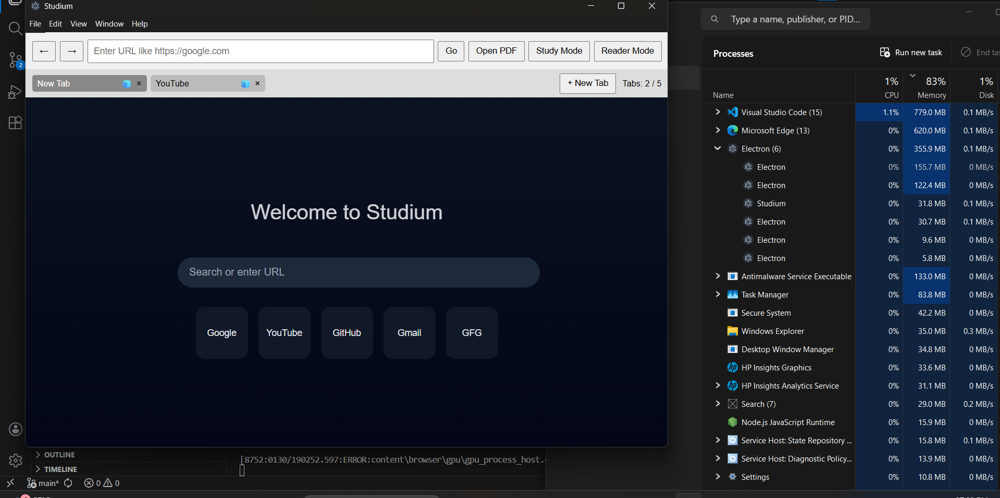
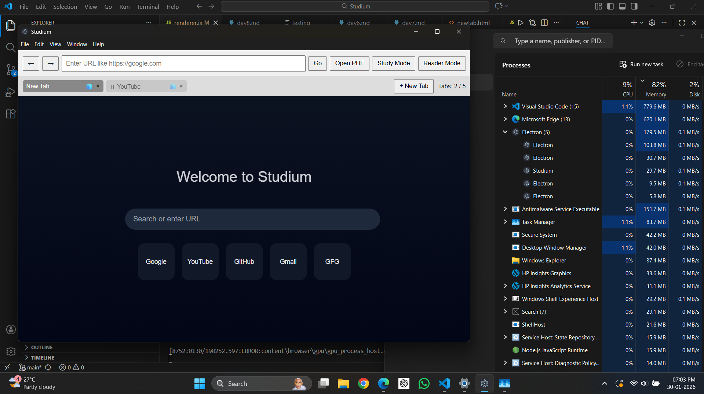
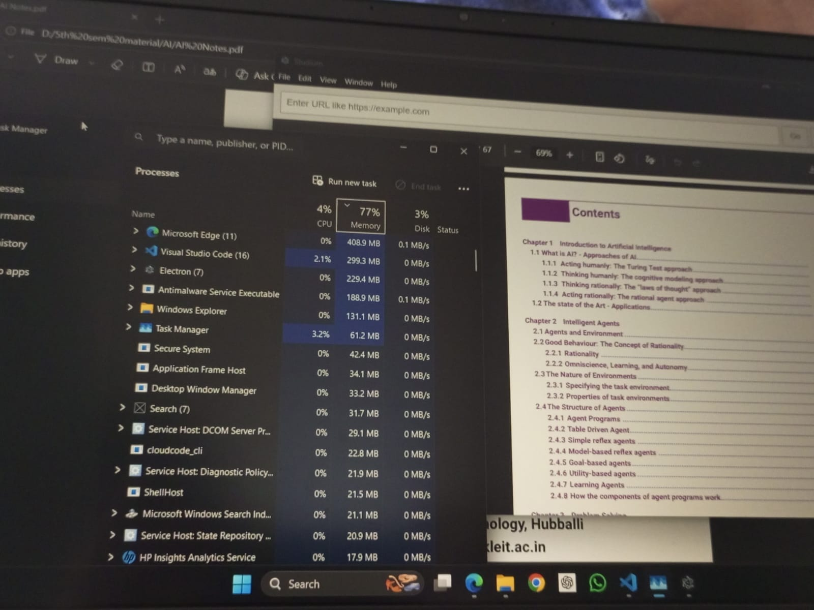

Local PDF Viewer
Open and read PDFs directly in the browser with reduced overhead.
Final Year Project · Desktop Browser
Studium is a lightweight browser designed for PDF-heavy academic workflows. Predictable memory usage, intentional tab limits, and distraction-free reading in one clean desktop app.

Real screenshot from Studium test build
Features
Open and read PDFs directly in the browser with reduced overhead.
Remove non-essential UI and keep your attention on content.
Clean article pages by reducing sidebars, ads, and visual noise.
Hard cap of 5 tabs to avoid memory spikes and browser bloat.
Recover your study context when needed, without forced restoration.
Fast controls for tab actions, modes, navigation, and opening PDFs.
Performance Proof
~210–230 MB
Idle memory (Studium)
~380–400 MB
Idle memory (Edge)
~300–320 MB
Mixed tabs + PDF workflow (Studium)
~800+ MB
Mixed tabs + PDF workflow (Edge)
Screenshots


Get Studium
Replace the configured download path with your final installer file and publish this page.
All download buttons on this page are automatically linked from one config in showcase.js.
Default file target: downloads/Studium-Setup.exe